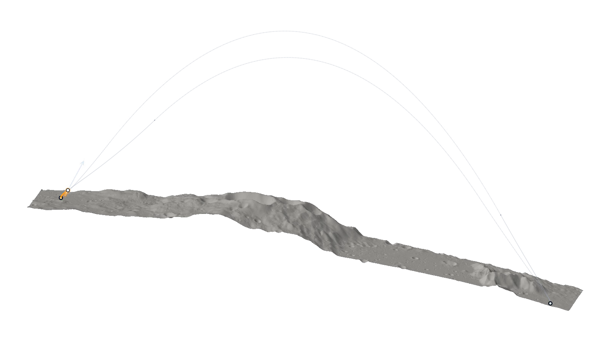
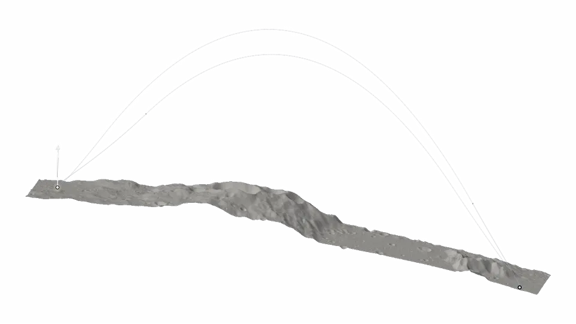
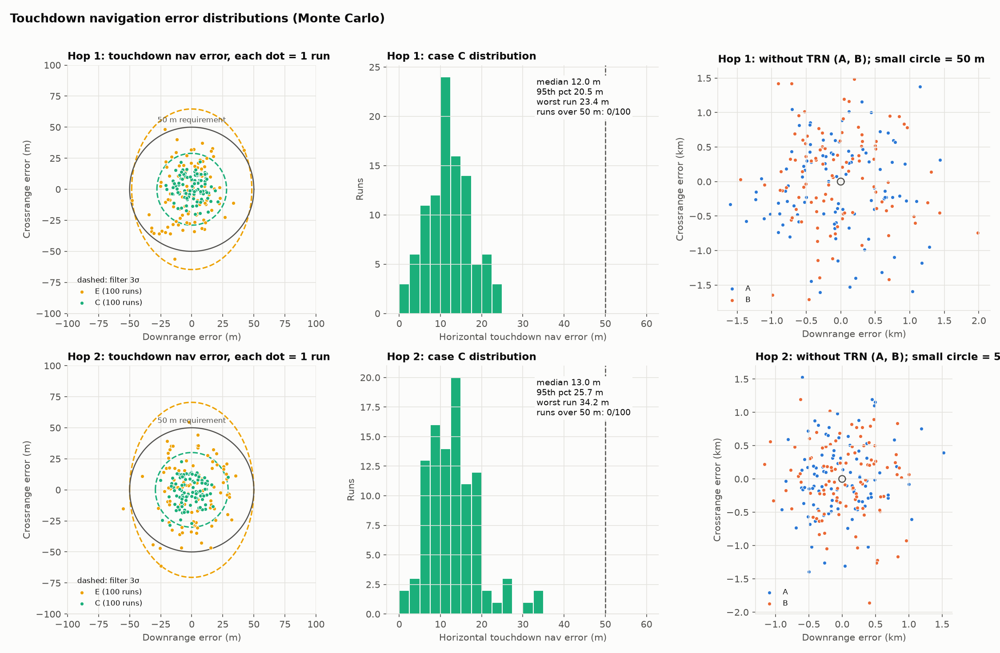

Lunar hopper media


Transparent WebM with animated WebP fallback. Original exports are unchanged; the white preview applies the portfolio's contrast adjustment.


Terrain: NASA LOLA, Barker et al. (2023). Vertical scale is exaggerated by 2; terrain illumination is illustrative.